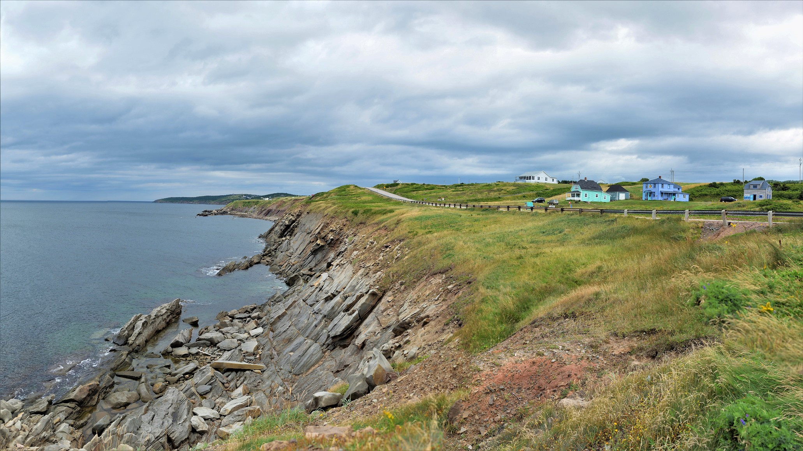
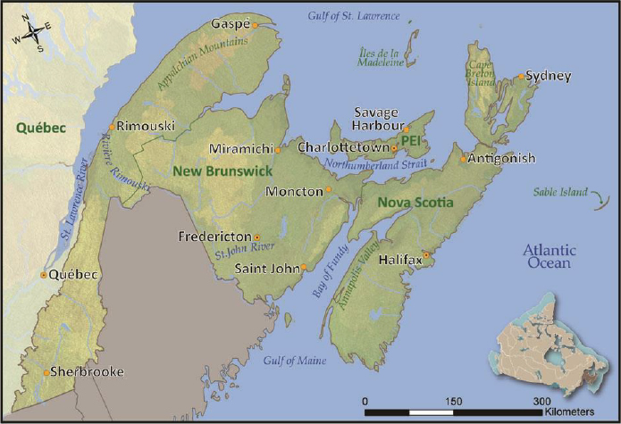
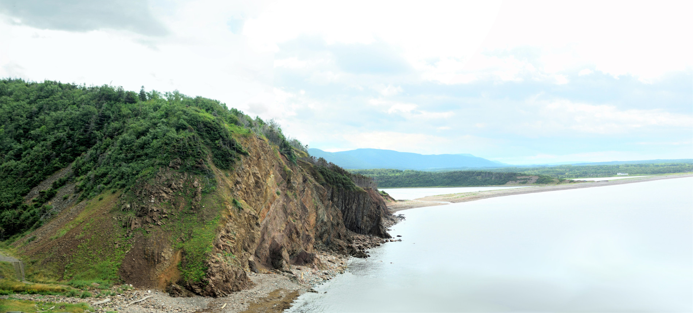

Main Page | Climate | Geographic History | Geological Landforms | Wildlife and Vegetation | Human Activity | Tourism | Bibliography
 Above: A rocky cliff being eroded by the Atlantic Ocean on the Western coast of Nova Scotia's Cape Breton Island.
 Above: Map of the Atlantic Maritime Ecozone, highlighted in green. Source
This webpage will focus on the Atlantic Maritime Ecozone (AME). It is located on the Eastern coast of Canada and includes the provinces of Nova Scotia, Prince Edward Island (P.E.I.), New Brunswick, and a small section of Quebec. The AME is directly next to the Atlantic Ocean. Use the top navigation bar to check out different topics regarding the AME, such as climate, geographics history, and more.
 Above: Photo of a small cliff off the coast of Cape Breton Island, NS. The exposed cliffs along the shores of Cape Breton Island are mainly composed of sedimentary rock.
The Atlantic Maritime Ecozone has some of the most beautiful landscapes in all of Canada. Rocky, rugged coastlines along with the vastness of the Acadian forests and the breathtaking views of the ancient highlands make for endless new experiences. Visiting such sites is easy due to the relative closeness of the national parks to major cities. Also, the Trans-Canada Highway, which extends from Fredericton, NB to Charlottetown, PEI to Sydney, NS allows travelling by car to be easy.
Thanks for reading!
Return to the top of the page.
© Trevor Li 2018, all rights reserved. All images by Trevor Li unless noted. Background image by the Lubuntu Artwork Team